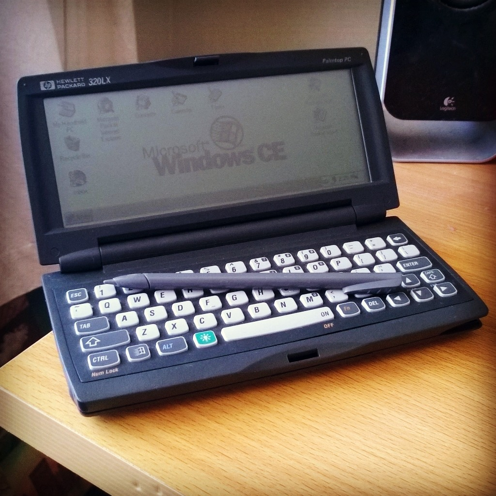

98nt:
Today I picked up my new Hewlett Packard 320LX Palmtop PC. Dating from 1997, it’s in surprisingly good condition considering its age. The HP logo on the lid and the barcode on the bottom are slightly worn with age, but other than its bulk and very ’90s look, you’d think it was new. It cost me more than I was expecting to pay for it, thanks to trigger-happy auction bidders on Trade Me, but the novelty and value of it in my collection are more than worth it.
It didn’t come with batteries (it runs off either alkaline or NiCad AA’s), so until the backup battery charges up (which, going by how long it took my ‘99 Fujitsu CE tablet, could take up to two weeks), it’s having to run from the wall, which will suck when I have to cut the power to it and the device resets itself.
It packs a staggering 5MB of ROM, 4MB of RAM, a 640x240 greyscale display, PCMCIA card slot, Compact Flash RAM slot, a Hitachi SH3 CPU, infrared, an RS-232C port, a backlight, and a docking station. Compare this to my tablet, which has 32MB of storage, my phone with 16GB, my laptop’s with 1TB, and my desktop’s 5TB.
When I get about three days to myself, I’ll try and hook it up to my computer using my virtual machines and USB-serial converter cables. Hell, if I managed to get the tablet working, there’s every chance I’ll get this one going too.
Even if the backup battery is dead, shouldn’t it keep memory unless you have to replace the main batteries?
If the main batteries are charged up, it should keep memory. At the moment though, all that’s in there are some dead backup batteries that will take who knows how long to charge (if they’ll charge at all), so there’s nothing to commit to memory. It was like this with my tablet - in fact, it took so long for my tablet to remember anything that I was convinced it didn’t have a backup in it at all. I’ll just have to find a spare wall outlet somewhere and keep it plugged in 24/7 until I can get some rechargeable AA’s for it.